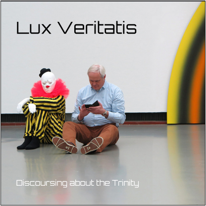

Challenge: Design a Band
Challenge Background Information
Outline - Feel free to use the following as a skeleton for yours:
Paragraph 1: Introduce Design Thinking and why we are studying it. Include the role of empathy in design thinking
Paragraph 2: Introduce the DEEP design process and each step we completed in order to create our bands
Example: In this challenge, we used the DEEP design process to design a band. The first step of the DEEP process is Discover.
In the discover step we...
The second step of the process is Empathize. During the empathize step we...
Paragraph 3: Talk about how you made your album cover. Include your empathy survey results and how you used them.
| Question | Person 1 | Person 2 | Person 3 |
|---|---|---|---|
| What kind of font appeals to you? | Serif | Sans Serif | Sans Serif |
| What kind of colors do you like? | Black | Red | Black and Yellow |
| Do you prefere realistic or abstract images? | Abstract | Abstract | Realistic |
Album Cover
Band Biography
Lux Veritatis hails from the small mountain town of Visp, Switzerland. Members Gunther Vandosa and Jean Paul Sartre grew up together listening to Swedish Death Pop and wanting nothing more than to make music forever. Unfortunately, tragedy struck when Gunther dropped out of middle school after being attacked by an insane clown. In order to get past his PTSD from this experience, Gunther moved to Poland and joined a monastery, where he learned about Lux Veritatis and the work that they are doing there to help find thermal water. During this time, Gunther lost touch with Jean Paul and Swedish Death Pop, but never lost his love for the music. While at the monastery, he got really into Gregorian Chant, and began performing in the monk chorus. As he grew older, Gunther learned to get past his clown PTSD with the help of the other monks. Finally, when he was 17, he decided it was time to again leave and face the cold, cruel world.
Meanwhile, Jean Paul had grown up and grown into a locally well-known dubstep producer after having been inspired by Skrillex. One day, Jean Paul and Gunther happened to meet each other on the street and instantly started reminiscing about their history of listening to Swedish Death Pop. The two shared their current musical interests, and 12 songs later, little did they know that they would start a regional phenomenon: Gregorian Dubstep. The inspiration of the melodies draws on Gunther’s time at the monastery and his fear of clowns. These inspirations, along with a chill-yet-complicated sounding band name came together to form the band's first album: Discoursing about the Trinity.
To hear track one of the new album, check out the following link: Gregorian Chant Part 1